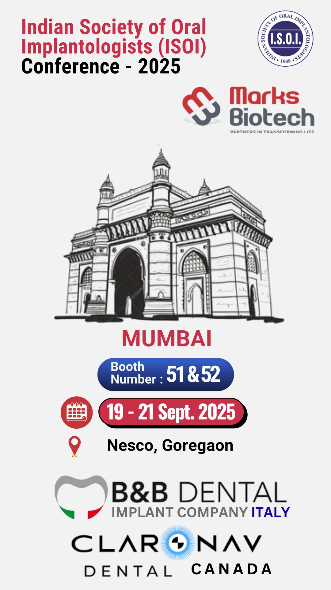

☰
- Highlights
- Dental Implantology
- Prosthetics
- Regenerative Products
-
Robotic Navigation


Navident
- Photogrammetry
- Resources
The ISOI 2025 Conference in Mumbai brings together leading implantologists, oral surgeons, prosthodontists, and restorative specialists from across India to explore the future of digital implant dentistry. Marks Biotech proudly presents next-generation implant systems and real-time dynamic navigation technology designed to enhance surgical accuracy, reduce complications, and improve long-term restorative outcomes.

The Indian Society of Oral Implantologists (ISOI) Conference is one of the most prestigious implant-focused scientific gatherings in India. The 2025 edition emphasizes digital integration, guided surgical protocols, regenerative advancements, and precision-driven full-arch rehabilitation.
As implant dentistry evolves, clinicians are increasingly adopting computer-assisted workflows to enhance predictability, efficiency, and patient safety. ISOI 2025 provides an immersive platform for exploring these advancements through:
• Scientific lectures by internationally recognized experts
• Interactive panel discussions and Q&A sessions
• Live surgical demonstrations showcasing cutting-edge techniques
• Hands-on workshops and skill-building sessions
• Industry-led technology showcases and product launches
Attendees will gain practical knowledge to incorporate digital dentistry tools into their practices, network with peers and pioneers, and stay ahead in an ever-evolving field.
A real-time surgical navigation platform offering 3D drill tracking, enhanced angulation control, and intraoperative flexibility. Unlike static guides, dynamic navigation allows immediate corrections during implant placement, improving safety around critical anatomical structures.
Attendees can witness live workflows, experience step-by-step demonstrations, and understand how this technology reduces procedural errors while increasing patient confidence.
Premium implant systems engineered for stability, versatility, and high success rates. Ideal for immediate loading, sinus lift cases, full-arch rehabilitation, and complex anatomical situations such as zygomatic and pterygoid implants.
Designed for both routine and advanced procedures, these implants are trusted globally and demonstrate consistent long-term outcomes.
High-precision digital impressions and multi-implant scanning solutions that enhance prosthetic accuracy, reduce chairside time, and optimize long-term restorative outcomes.
Participants will learn how digital workflows simplify complex full-arch cases, improve patient comfort, and reduce the margin for error.
• Experience live navigation workflow demonstrations
• Discuss complex implant cases with technical experts
• Understand static vs dynamic guided surgery and their clinical benefits
• Explore partnership opportunities and special conference offers
• Gain insights into integrating AI, robotics, and digital workflows in everyday practice
• Receive personalized advice on incorporating cutting-edge technology into your clinic
• Access exclusive product demos and limited-time event specials
• Network with professionals and industry leaders in an interactive environment
• Implantologists and oral surgeons seeking advanced digital solutions
• Prosthodontists focused on precision prosthetics and full-arch rehabilitation
• Restorative dentists integrating guided surgery and digital workflows
• Dental students and emerging practitioners learning from global experts
• Clinic owners exploring future-ready implant technologies
• Live Surgery & Navigation Demonstrations
• Expert Panel Discussions on emerging trends
• Hands-on Workshops with digital tools and implant systems
• Innovation Zone featuring regenerative techniques & AI-assisted planning
• Strategic Networking Opportunities with industry leaders
ISOI 2025 emphasizes the integration of technology, precision, and patient-centric care:
• Adoption of dynamic navigation systems for safer, more accurate surgeries
• Growth of full-digital workflows including photogrammetry & CAD/CAM prosthetics
• Incorporation of regenerative and minimally invasive techniques
• AI-driven treatment planning and robotics for complex cases
• Enhancing patient outcomes through predictable, streamlined protocols
Attendees will leave the conference equipped with actionable insights, ready to implement next-generation solutions in their practices and gain a competitive edge in a rapidly evolving dental landscape.